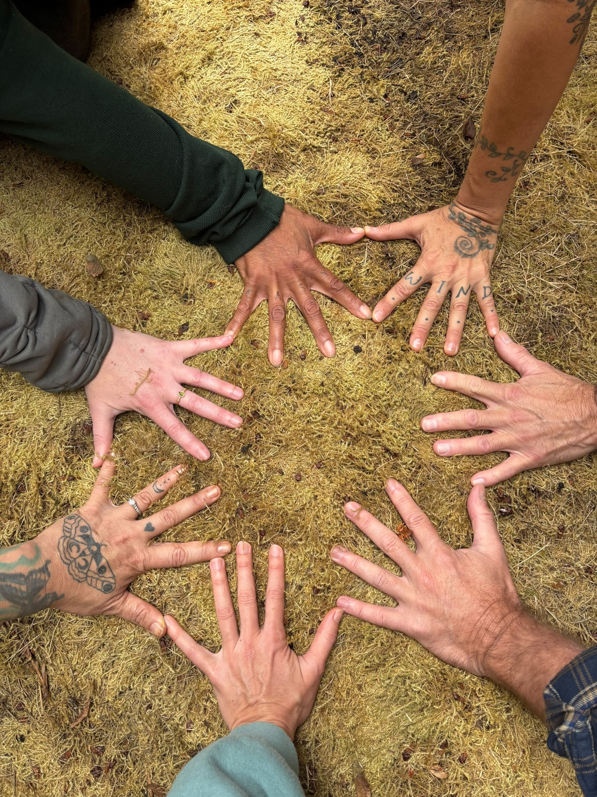

The inspiration behind Temples of Sound

Temples of Sound began through Sydan Aguacielos’ own relationship with meditation and sound. For years, Syd had a hard time with traditional silent meditation. The mind just didn’t seem to want to be quiet. Using their own voice for humming, toning, and sounding felt different. It gave the mind somewhere to rest and created a way into stillness that actually felt natural.
Then a dear friend introduced Syd to the shruti box. Something about that steady, continuous drone changed everything. Syd began spending long stretches sounding with it, and those sessions became a space for deep self-inquiry. Things that weren’t working became easier to see. Changes that had been waiting to happen became harder to ignore.
Over time, this simple practice genuinely changed Syd’s life. Singing meditation became less about “meditating correctly” and more about listening to the body, the voice, and what was happening underneath all the noise.
Temples of Sound grew from wanting to share that experience. Not as something to master or perform, but as an invitation to make sound together, calm the nervous system, listen inward, and discover what might shift when we give ourselves enough space to hear.
Building a compassionate community
We aspire to connect with individuals who believe in a fundamental truth: every living being on Earth deserves to be fed, clean, clothed, housed, safe, and flourishing. The community connected with Temples of Sound is a place where differences are not just tolerated but genuinely accepted, fostering an environment where everyone can be their authentic self and contribute to a shared vision of a more compassionate world.
Explore community